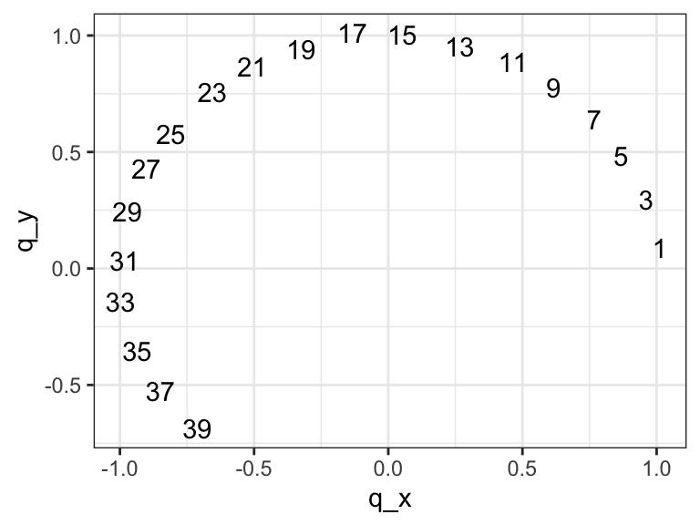
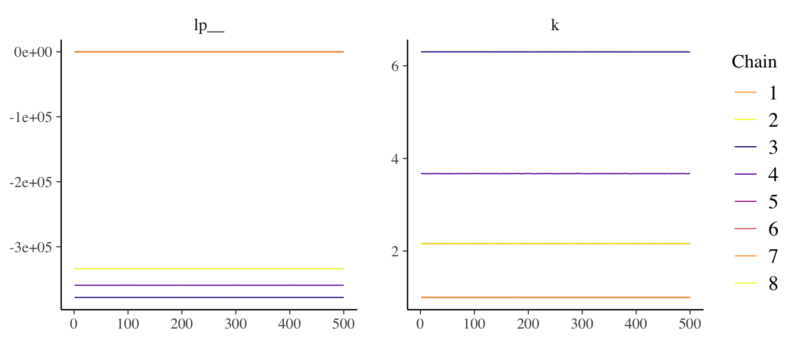
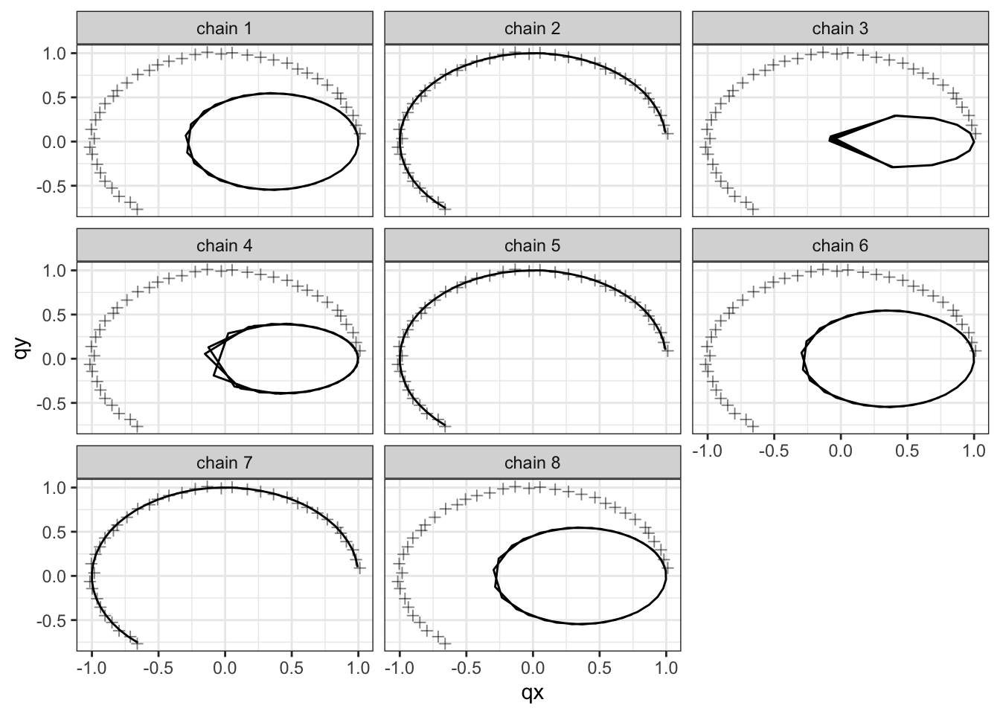
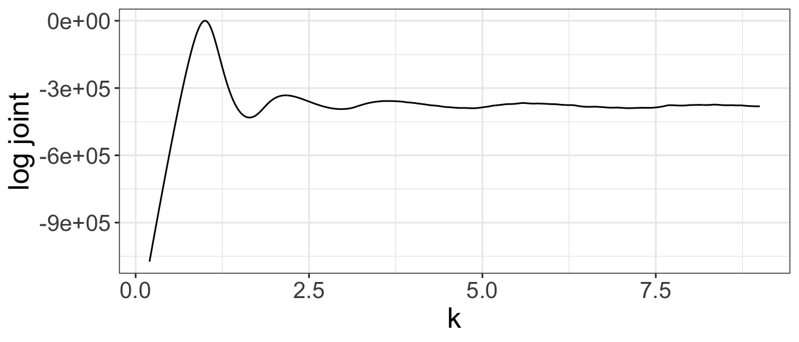
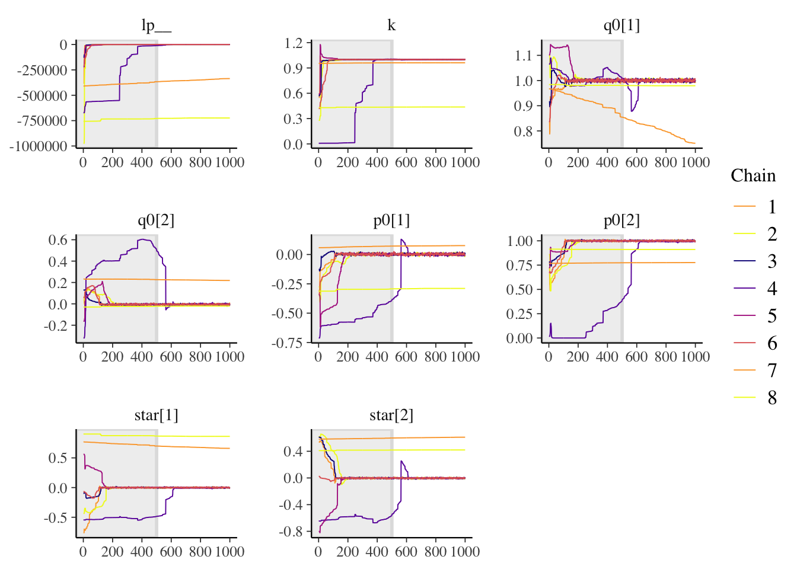
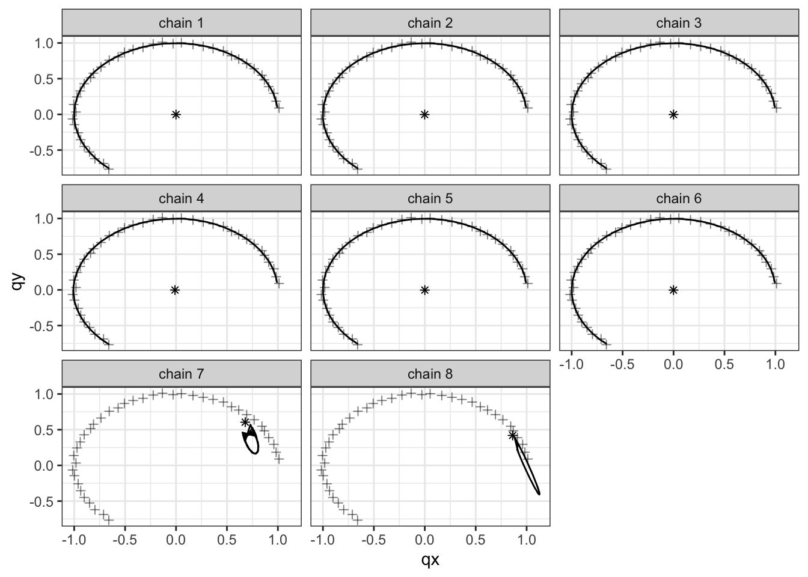
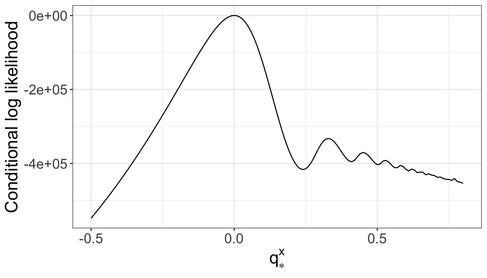

Bayesian Model of Planetary Motion: exploring ideas for a modeling workflow when dealing with ordinary differential equations and multimodality
Abstract
The Bayesian model of planetary motion is a simple but powerful example that illustrates important concepts, as well as gaps, in prescribed modeling workflows. Our focus is on Bayesian inference using Markov chains Monte Carlo for a model based on an ordinary differential equations (ODE). Our example presents unexpected multimodality, causing our inference to be unreliable and what is more, dramatically slowing down our ODE integrators. What do we do when our chains do not mix and do not forget their starting points? Reasoning about the computational statistics at hand and the physics of the modeled phenomenon, we diagnose how the modes arise and how to improve our inference. Our process for fitting the model is iterative, starting with a simplification and building the model back up, and makes extensive use of visualization.Introduction
As developers of statistical software3, we realize that we cannot fully automate modeling. Practitioners need to take bespoke steps to fit, evaluate, and improve their models. At the same time, the more modeling we do, the better prepared we usually are for the next project we undertake. It’s not uncommon to apply hard-learned lessons from a past project to a new problem. Articles on modeling workflows aim to formalize this experience, building and deconstructing heuristics, developing methods, and motivating new theory (e.g. Blei 2014; Gabry et al. 2019; Betancourt 2020; Gelman et al. 2020). We believe this effort must be complemented by case studies, such as this one, which illustrate in great details the concepts that arise in workflows, provide usable code, and also raise new questions. The specific concepts we encounter in this article include why our inference fails way more slowly than it succeeds, why the behavior of an ODE changes wildely across the parameter space, and what to do when chains drift into “unreasonable” modes of the posterior distribution.
Given the recorded position of a planet over time, we want to estimate the physical properties of a star-planet system. This includes position, momentum, and gravitational interaction. We fit the model with Stan (Carpenter et al. 2017), using a Hamiltonian Monte Carlo (HMC) sampler, a gradient-based Markov chain Monte Carlo (MCMC) algorithm; for a thorough introduction to HMC, we recommend the article by Betancourt (2018). Initially, we meant the planetary motion problem to be a simple textbook example for ODE-based models; but it turns out many interesting challenges arise when we do a Bayesian analysis on this model. We discuss how to diagnose and fix these issues. The techniques we deploy involve a combination of mathematical considerations that are specific to the system at hand and statistical principles we can generalize. This case study examines the model in the controlled setting of simulated data.
We begin by constructing our model, using elementary notions of classical mechanics. After failing to fit this complete model, we develop a simpler model and build our way back to the original model. This step-by-step expansion allows us to isolate issues that make Bayesian inference challenging. Classic tools we use involve: running multiple chains, checking convergence diagnostics, and simulating data from the fitted model. There are several ways to visualize simulated data and an agile use of plots proves extremely helpful. Running simulations for multiple parameter values allows us to understand how the parameters interact with the likelihood, and identify local modes in the posterior. In our presentation, we try to distinguish generalizable methods, problem-specific steps, and shortcoming in existing defaults.
R setup
library(cmdstanr)
library(posterior)
library(ggplot2)
library(dplyr)
library(plyr)
library(tidyr)
library(boot)
library(latex2exp)
source("tools.r")
bayesplot::color_scheme_set("viridisC")
set.seed(1954)All the requisite code to run this notebook can be found online, in the planetary motion github repository.
Building the model
Consider a simple star-planet system. We assume the star is much more massive than the planet and approximate the position of the star as fixed. We would like to estimate the following quantities:
- The gravitational force between the two objects. We assume the gravitational constant is known, \(G = 1.0 \times 10^{-3}\) in some unit, and aim to evaluate the star-planet mass ratio. To do this, we set the planetary mass to \(m = 1\). It remains to evaluate the solar mass, \(M\).
- The initial position vector, \(q_0\), and the initial momentum vector, \(p_0\), of the planet.
- The subsequent position vector, \(q(t)\), of the planet over time.
- The position vector of the star, \(q_*\).
Equations of motion
A more natural treatment of the problem would be using polar coordinates, but for simplicity, let’s use Cartesian coordinates. The motion of the planet is described by Newton’s law of motion, which is a second-order differential equation. For convenience, we use Hamilton’s formulation of the law, which is based on a system of two first-order differential equations, \[\begin{eqnarray*} \frac{\mathrm d q}{\mathrm d t} & = & \frac{p}{m}, \\ \frac{\mathrm d q}{\mathrm d t} & = & - \frac{k}{r^3} (q - q_*), \end{eqnarray*}\] where \(k = GmM = 10^{-3}M\), and \(r = \sqrt{(q - q_*)^T(q - q_*)}\) is the distance between the planet and the star.
Our measurements are made with a normally distributed error: \[ q_\mathrm{obs} \sim \mathrm{Normal}(q, \sigma I), \] with \(\sigma\) the standard deviation and \(I\) the \(2 \times 2\) identity matrix.
Simulation
The simulation can be done in Stan, using one of its numerical integrators. At \(t = 0\), \(q_0 = (1, 0)\) and \(p_0 = (0, 1)\), and we set \(k = 1\).
## Model executable is up to date!n <- 40
sigma = 0.01
sim <- mod$sample(data = list(n = n, sigma_x = sigma, sigma_y = sigma),
chains = 1, iter_warmup = 1,
iter_sampling = 2, seed = 123)## Running MCMC with 1 chain...
##
## Chain 1 Iteration: 1 / 3 [ 33%] (Warmup)
## Chain 1 Iteration: 2 / 3 [ 66%] (Sampling)
## Chain 1 Iteration: 3 / 3 [100%] (Sampling)
## Chain 1 finished in 0.2 seconds.simulation <- as.vector(sim$draws(variables = "q_obs")[1, , ])
q_obs <- array(NA, c(n, 2))
q_obs[, 1] <- simulation[1:40]
q_obs[, 2] <- simulation[41:80]
sub_set <- seq(from = 1, to = 40, by = 2)
plot <- ggplot(data = data.frame(q_x = q_obs[sub_set, 1],
q_y = q_obs[sub_set, 2],
time = sub_set),
aes(x = q_x, y = q_y, label = time)) + theme_bw() +
geom_text()
plot
Fitting a simple model and diagnosing inference
A first attempt at fitting the complete model (planetary_motion_star.stan) fails spectacularly: the chains do not converge and take a long time to run. This is an invitation to start with a simpler model. A useful simplification is more manageable but still exhibits the challenges we encounter with the complete model. The hope is that a fix in this simple context translates into a fix in a more sophisticated setting. This turns out to be true here where a simple one-parameter model allows us to understand the fundamentally multimodal nature of the model.
There are many ways to simplify a model.
A general approach is to fix some of the parameters, which we can easily do when working with simulated data.
We fix all the parameters, except for \(k\), and writhe the file planetary_motion.stan.
We now want to characterize the posterior distribution,
\[
p(k \mid q_\mathrm{obs}),
\]
by fitting the model with Stan.
Since \(k\) is a scalar, we could use quadrature but our goal is to understand the pathologies that frustrate our inference algorithm, so we stick to MCMC.
As a prior, we use
\[
k \sim \mathrm{Normal}^+(0, 1).
\]
We fit 8 chains in parallel.
mod <- cmdstan_model("model/planetary_motion.stan")
fit <- mod$sample(data = list(n = n, q_obs = q_obs),
chains = chains, parallel_chains = chains,
iter_warmup = 500,
iter_sampling = 500,
seed = 123, save_warmup = TRUE)
fit$save_object(file = "saved_fit/fit1.RDS")# The model takes a while to run, so we read in the saved output.
r_fit1 <- readRDS("saved_fit/fit1.RDS")
print(r_fit1$time(), digits = 3)## $total
## [1] 4434
##
## $chains
## chain_id warmup sampling total
## 1 1 5.67 4.57 10.56
## 2 2 1.71 1.54 3.40
## 3 3 2380.82 2047.75 4433.93
## 4 4 175.61 6.21 181.98
## 5 5 1.78 1.54 3.50
## 6 6 5.66 4.77 10.74
## 7 7 1.77 1.65 3.59
## 8 8 5.56 4.57 10.42The first notable pathology is that some of the chains take a much longer time to run. The difference is not subtle…
Let’s examine the summary.
## # A tibble: 2 x 5
## variable mean sd rhat ess_bulk
## <chr> <dbl> <dbl> <dbl> <dbl>
## 1 lp__ -217422. 169013. 2.67 9.49
## 2 k 2.43 1.69 2.62 9.56\(\hat R \gg 1\). Wow, these numbers are dramatic! Clearly the chains are not mixing and we can visualize this using trace plots.

Notice that chains 3 and 4, which ran for longer than 1000 seconds, sample around the largest values of \(k\) and also produce the lowest log posterior distribution. It’s not uncommon for issues to come in bulks. By contrast, chains that sample around \(k = 1\) run in ~2 seconds, and produce a high log posterior.
At this point, we may formulate several hypothesis as to what may be happening:
- The model is degenerate and cannot resolve the correct value of \(k\).
- The chains get stuck at local modes and cannot escape, even if the log posterior is much higher near \(k = 1\).
- The chains get stuck on flat surfaces, and the gradient doesn’t guide the chain back to \(k \approx 1\).
- The numerical integrator struggles to accurately solve the ODEs for large values of \(k\). This means the ODE integrator is slower or even inaccurate. In the latter case, this also means our gradient calculations, and computation of HMC could be wrong.
Is the model degenerate?
Bearing a slight abuse of language, we use “degenerate” to mean that wildly different values of \(k\) roughly produce the same data generating process.
We can check for degeneracy by looking at the posterior predictive checks, split across chains.
We plot \(q_x\) against \(q_y\), and for each chain, compute the median estimate for \(q_\mathrm{pred}\), obtained using the generated quantities block.
Note that since we fixed \(\sigma = 0.01\), we expect the confidence interval to be very narrow.
data_pred <- data.frame(q_obs, 1:n)
names(data_pred) <- c("qx", "qy", "t")
ppc_plot2D(r_fit1, data_pred = data_pred)
Clearly, only the chains that landed close to \(k = 1\) (chains 2, 5, and 7) are able to fit the data. This is consistent with the much higher log posterior density these chains produce. Degeneracy therefore doesn’t drive the lack of convergence because otherwise the different chains would produce roughly the same predictions.
At this point, we have taken “standard” steps to diagnose issues with our inference. To fully grasp what prevents the chains from mixing, we require a more bespoke analysis. We summarize our reasoning, noting it involves unmentioned trials and errors, and long moments of pondering.
The wanderers: how do the chains even find these presumed modes?
Given our prior, \(k \sim \mathrm{normal}^+(0, 1)\), and the very strong log posterior density around \(k = 1\), we may wonder: how did the chains drift to these distant modes? Based on the trace plots, the chains appear to be relatively static during the sampling phase. We extend the trace plots to include the warmup phase.

It is now clear that the chain’s final position is mostly driven by its initial point. It then only takes a few iterations for the chain to be trapped inside a mode. We further note that the initial points, which are based on Stan’s defaults, are inconsistent with our prior. Currently, the starting point are sampled from a uniform distribution over (-2, 2), over the unconstrained space. That is \[ \log k^{(0)} \sim \mathrm{uniform}(-2, 2). \] The bounds of \(k\) are thence \((\sim 0.13, 7.4)\), which is a rather large range. Inevitably, some of the chains start in the far tails of \(p(k \mid y)\) and cannot make it back.
Confirming the existence of local modes
Because the parameter space is one-dimensional, we can “cheat” a bit – well, we’ve earned it by setting up a simplified problem – and compute the joint distribution (i.e. unnormalized posterior) across a grid of values for \(k\) to check that the modes indeed exist.
ks <- seq(from = 0.2, to = 9, by = 0.01)
q0 <- c(1.0, 0)
p0 <- c(0, 1.0)
dt <- 0.001
m <- 1
n_obs <- nrow(q_obs)
ts <- 1:n_obs / 10
sigma_x <- 0.01
sigma_y <- 0.01
lk <- rep(NA, length(ks))
for (i in 1:length(ks)) {
k <- ks[i]
q_sim <- solve_trajectory(q0, p0, dt, k, m, n_obs, ts)
lk[i] <-
sum(dnorm(q_obs[, 1], q_sim[, 1], sigma_x, log = T)) +
sum(dnorm(q_obs[, 2], q_sim[, 2], sigma_y, log = T)) +
dnorm(k, 0, 1, log = T)
}
plot <- ggplot(data = data.frame(ks = ks, lk = lk),
aes(x = ks, y = lk)) + theme_bw() +
geom_line() + theme(text = element_text(size = 18)) +
ylab("log joint") + xlab("k")
plot
There is a strong mode at \(k = 1\) and a “wiggly” tail for larger values of \(k\), with some notable local modes.
Elliptical motion induces multimodality
To understand how these modes arise, we may reason about the log likelihood as a function that penalizes large distances between \(q_\mathrm{obs}\) and \(q(k)\), the positions we obtain when we simulate trajectories for a certain value of \(k\). Indeed \[ \log p(q_\mathrm{obs} \mid k) = C - \frac{1}{2\sigma^2} ||q_\mathrm{obs} - q(k))||^2_2, \] where \(C\) is a constant which doesn’t depend on \(k\).
Let us now simulate trajectories for various values of \(k\).
k <- 0.5
q_050 <- solve_trajectory(q0, p0, dt, k, m, n_obs, ts)
k <- 1.6
q_160 <- solve_trajectory(q0, p0, dt, k, m, n_obs, ts)
k <- 2.16
q_216 <- solve_trajectory(q0, p0, dt, k, m, n_obs, ts)
k <- 3
q_300 <- solve_trajectory(q0, p0, dt, k, m, n_obs, ts)
q_plot <- rbind(q_obs, q_050, q_160, q_216, q_300)
k_plot <- rep(c("1.0", "0.5", "1.6", "2.16", "3.00"), each = 40)
plot_data <- data.frame(q_plot, k_plot, obs = 1:40)
names(plot_data) <- c("qx", "qy", "k", "obs")
comp_point <- 35
select <- 1:(40 * 5)
plot <- ggplot() + geom_path(data = plot_data[select, ],
aes(x = qx, y = qy, color = k)) +
theme_bw() +
geom_point(aes(x = q_216[comp_point, 1], y = q_216[comp_point, 2]),
shape = 3) +
geom_point(aes(x = q_160[comp_point, 1], y = q_160[comp_point, 2]),
shape = 3) +
geom_point(aes(x = q_obs[comp_point, 1], y = q_obs[comp_point, 2])) +
# Add segments to compare distances.
geom_segment(aes(x = q_obs[comp_point, 1], y = q_obs[comp_point, 2],
xend = q_216[comp_point],
yend = q_216[comp_point, 2]),
linetype = "dashed") +
geom_segment(aes(x = q_obs[comp_point, 1], y = q_obs[comp_point, 2],
xend = q_160[comp_point, 1],
yend = q_160[comp_point, 2]),
linetype = "dashed") +
theme(text = element_text(size = 18)) +
xlab(TeX("$q_x$")) + ylab(TeX("$q_y$"))
plot
As \(k\), and therefore the gravitational force, increases, the orbit becomes shorter. The orbit eventually gets so short that for high enough values of \(k\), the planet undergoes multiple orbits in the observed time. We next note that for \(k < 1\), the trajectory can drift arbitrarily far away from the observed ellipsis. On the other hand, for \(k > 1\), the simulated ellipsis must be contained inside the observed ellipsis, which bounds the distance between \(q_\mathrm{obs}\) and \(q\). Finally, as we change \(k\) and “rotate” the ellipsis, some of the observed and simulated positions become more aligned, which induces the wiggles in the tail of the likelihood and creates the local modes. This can be seen with the \(35^\mathrm{th}\) observation, where the observed trajectory at \(k = 1\) is closer to the trajectory simulated when \(k = 2.16\) than when \(k = 1.6\).
Clearly the local modes are a mathematical artifact caused by the interaction between our measurement model and the observed elliptical motion: they do not describe a latent phenomenon of interest. It also clear, from the trace and likelihood plot, that the minor modes contribute a negligible probability mass to the posterior distribution. This means that any chain which doesn’t explore the dominant mode wastes our precious computational resources.
Bad Markov chain, slow Markov chain?
Not only are the samples produced by the misbehaving chains essentially useless when computing summary quantities, such as expectation values and quantiles; they also take much longer to run! Let’s elucidate why that is.
A priori, the ODE we solve is fairly simple. It certainly is when \(k = 1\). But the problem becomes numerically more difficult for large values of \(k\), because for each step \(\Delta t\), the planet travels a longer trajectory; this means a greater change in \(q\) and \(p\). Hence, in order to achieve the same precision, a numerical integrator must take smaller step sizes, leading to longer integration times.
There is wisdom is this anecdote: an easy deterministic problem can become difficult in a Bayesian analysis. Indeed Bayesian inference requires us to solve the problem across a range of parameter values, which means we must sometimes confront unsuspected versions of the said problem. In our experience, notably with differential equation based models in pharmacology and epidemiology, we sometime require a more computationally expensive stiff solver to tackle difficult ODEs generated during the warmup phase; on the other hand, the problem behaves better during the sampling phase.
Other times, slow computation can alert us that our inference is allowing for absurd parameter values and that we need either better priors or more reasonable initial points.
Ideally, we would want our algorithm to fail fast – it does the opposite. We however note that, waiting for the chains to undergo 1,000 iterations was unnecessary. The observed failure could have been diagnosed by running the algorithm for a shorter time, which is an important perspective to keep in mind in the early stages of model development.
Improving the inference
Equipped with a sound understanding of the pathology at hand, we can try to improve our inference. Three candidate solutions come to mind.
Build stronger priors
One option is to build a more informative prior to reflect our belief that a high value of \(k\) is implausible; or that any data generating process that suggests the planet undergoes several orbits over the observation time is unlikely. When such information is available, stronger priors can indeed improve computation. This is unfortunately not the case here. A stronger prior would reduce the density at the mode, but the wiggles in the tail of the posterior would persist. Given MCMC uses an unnormalized posterior density to explore the parameter space, a change in the magnitude of the log density will have no effect, even though a change in the gradient can affect HMC. Paradoxically, with more data, the tail wiggles become stronger: the model is fundamentally multimodal. Note further that our current prior, \(k \sim \mathrm{normal}^+(0, 1)\), is already inconsistent with the values \(k\) takes at the minor modes. In principle we could go a step further and add a hard constraint on orbital time or velocity to remove the modes.
Reweight draws from each chain
One issue is that the Markov chains fail to transition from one mode to the other, meaning some chains sample over a region with a low probability mass. We can correct our Monte Carlo estimate using a re-weighting scheme, such as stacking (Yao, Vehtari, and Gelman 2018). This strategy likely gives us reasonable Monte Carlo estimates, but: (i) we will not comprehensively explore all the modes with 8 chains, so stacking should really be treated as discarding the chains stuck at local modes and (ii) we still pay a heavy computational price, as the chains in minor modes take up to \(\sim\) 1000 times longer to run.
Tune the starting points
Stan’s default initial points produce values which are inconsistent with our prior (and our domain expertise). In a non-asymptotic regime, the Markov chain doesn’t always “forget” its starting point, and it is unlikely to do so here even if we run the chain for many many more iterations. We can therefore not ignore this tuning parameter in our algorithm. What then constitutes an appropriate starting point?
There are various considerations. In order to assess whether our chains converge, notably with \(\hat R\), our starting points should be overdispersed, relative to our posterior (e.g. Vehtari et al. 2020). But clearly, for this and other examples, too much dispersion can prevent certain chains from exploring the relevant regions of the parameter space. One heuristic is to sample the starting point from the prior distribution, or potentially from an overdispered prior.
Another perspective is to simply admit that there is no one-size-fits-all solution. This is very much true of other tuning parameters of our algorithm, such as the length of the warmup or the target acceptance rate of HMC. While defaults exist, a first attempt at fitting the model can motivate adjustments. In this sense, we can justify using a tighter distribution to draw the starting points after examining the behavior of the Markov chains with a broad starting distribution.
This doesn’t sound ideal, if failing to fit the model takes \(\sim\) 2,000 seconds! As mentioned before, we however didn’t need to wait this long to diagnose a failure in our inference and the here presented analysis could have been made with 100 MCMC draws.
Fitting the simplified model
We opt for the third candidate solution and use \[ \log k^{(0)} \sim \mathrm{uniform}(-0.5, 0.5). \]
mod <- cmdstan_model("model/planetary_motion.stan")
fit <- mod$sample(data = list(n = n, q_obs = q_obs),
init = 0.5,
chains = chains, parallel_chains = chains,
iter_warmup = 500,
iter_sampling = 500,
seed = 123, save_warmup = TRUE, refresh = 0)## Running MCMC with 8 parallel chains...
##
## Chain 3 finished in 3.8 seconds.
## Chain 4 finished in 3.9 seconds.
## Chain 5 finished in 4.0 seconds.
## Chain 7 finished in 4.0 seconds.
## Chain 1 finished in 4.2 seconds.
## Chain 2 finished in 4.2 seconds.
## Chain 8 finished in 4.1 seconds.
## Chain 6 finished in 4.2 seconds.
##
## All 8 chains finished successfully.
## Mean chain execution time: 4.1 seconds.
## Total execution time: 4.3 seconds.## # A tibble: 2 x 5
## variable mean sd rhat ess_bulk
## <chr> <dbl> <dbl> <dbl> <dbl>
## 1 lp__ -36.1 0.706 1.00 2009.
## 2 k 1.00 0.000328 1.00 1422.
Everything now looks good. The chains converge near \(k = 1\), and simulate predictions that are consistent with the data.
Building the model back up: position and momentum
Starting from the simplified model, we now build our way back to the original model. We do so by “unfixing” one or two parameters at a time. In total, we fit four models, which gradually estimate more parameters, \[ (k) \to (k, p_0) \to (k, p_0, q_0) \to (k, p_0, q_0, q_*). \]
It turns out fitting more sophisticated models is not quite straightforward but we can put what we have learned from the simplified model to good use. Most inference problems we encounter across the models we fit can be traced back to the interaction between the likelihood and the cyclical observations – an elementary notion, once grasped, but which would have been difficult to discover in a less simple setting than the one we used.
For several parameters, we adjust the starting point, especially when encoding stronger priors is neither helpful (because of the fundamental multimodality), nor possible. An example is the initial momentum, \(p_0\), and the initial position, \(q_0\).
We have no a priori information for the direction of the momemtum. A graphical inspection of the data suggests the planet is moving counter-clockwise. Recall that in our simulation, \(p_0 = (1, 0)\). A first attempt at fitting the model shows there exists a mode at \(p_0 \approx (-0.5, -1.5)\), which means the planet is moving clockwise! If the planet moves fast enough, some of the generated trajectory does in fact align with the observed trajectory (thank you posterior predictives for helping us spot this!), leading to a similar problem than the one we observed before hand. To guide the Markov chain to a region with high probability mass, we start wit a crude estimate: \[ \hat p = \frac{q_{\mathrm{obs},2} - q_{\mathrm{obs}, 1}}{t_2 - t_1}, \] and similarly with the initial position \[ \hat q = q_\mathrm{obs, 1}. \] We can then perturb these values to make sure the chains start at different points.
Expending the model to estimate the position of the star
So far, we have assumed that the star was positioned at the origin, that is \(q_* = (0, 0)\).
We now relax this assumption and treat the position of the star as unknown.
This requires adding two parameters to the model, \(q_*\) (star in the model), and adjusting Hamilton’s equations to make sure that \(r\) is the distance between \(q\) and \(q_*\) and that \(\mathrm d p / \mathrm d t\) points from the planet to the star.
The assumption that the position of the star is fixed only works if the star is much more massive than the planet. In the previous model, setting \(q_* = (0, 0)\) enforced that the star stays fixed. In this new model, we will attempt to encode this belief in our priors.
Encoding more information in our prior
The stellar mass doesn’t explicitly appear in the model. Instead, we work with \[ k = GMm. \] Let us consider our solar system. The solar mass is \[ M_* = 2 \times 10^{30} \mathrm{kg}. \] The mass of the planet can vary widely. Earth’s mass is \[ m_\mathcal{E} = 6 \times 10^{24} \mathrm{kg}, \] that of Jupiter \[ m_\mathcal{J} = 1.9 \times 10^{27} \mathrm{kg}. \] In the unusual case where we could record the position of an exoplanet, the mass of the host star could also vary widely.
Nevertheless, these orders of magnitude are telling. Let’s take as an implicit prior, \[ M \sim \mathrm{Normal}(10^3, 5 \times 10^2), \] which we might expect if we are observing a Jovian planet. In the right units, \(G = 10^{-3}\), and \(k = 1\). The above prior then becomes \[ k \sim \mathrm{Normal}(1, 5 \times 10^{-4}), \] which is much more informative than what we initially used. Relaxing the above a little, we may roll with a prior such as \(k \sim \mathrm{Normal}(1, 10^{-3})\).
A first pass at fitting the model
Let us fit the model, using the initial conditions we developed above, plus a broad range of values for the star’s position, confined by the observations.
## Model executable is up to date!# Process data for new model (same data, different format)
n_select <- 40
time <- (1:n_select) / 10
stan_data <- list(n = n_select, q_obs = q_obs, time = time,
sigma = sigma)
init_empirical <- function() {
p0_empirical <- (q_obs[2, ] - q_obs[1, ]) /
(stan_data$time[2] - stan_data$time[1])
q0_empirical <- q_obs[1, ]
sigma <- 0.1
list(k = abs(rnorm(1, 0, 0.5)),
p0 = c(rnorm(2, p0_empirical, sigma)),
q0 = c(rnorm(2, q0_empirical, sigma)),
star = c(runif(2, -1, 1))
)
}
chains <- 8
init_files <- paste0("init/planetary_motion_star/init",
1:chains, ".json")
if (FALSE) { # Set to TRUE to generate new inits;
# else use existing inits.
for (i in 1:chains) {
init_chain <- init_empirical()
write_stan_json(init_chain, file = init_files[i])
}
}# (Code takes time to run; instead use saved output)
fit <- mod$sample(data = stan_data,
init = init_files,
chains = chains, parallel_chains = chains,
iter_warmup = 500,
iter_sampling = 500,
seed = 123, save_warmup = TRUE)
fit$save_object(file = "saved_fit/fit_star.RDS")## $total
## [1] 1702
##
## $chains
## chain_id warmup sampling total
## 1 1 42.10 34.0 77.0
## 2 2 38.28 39.9 78.6
## 3 3 44.60 35.5 80.7
## 4 4 8.66 23.4 32.4
## 5 5 38.35 38.3 77.1
## 6 6 39.74 35.0 75.3
## 7 7 510.81 69.3 580.7
## 8 8 1410.23 290.8 1701.8As commented before, we would’ve been wise not to run the algorithm for so many iterations… Stan returns several warning messages, including divergent transitions (for 343 out of 8,000 samples) and exceeded maximum treedepths (for 28 samples).
We can check the warning message report using fit$cmdstan_diagnose().
As before, let’s examine a few diagnostics:
## # A tibble: 8 x 5
## variable mean sd rhat ess_bulk
## <chr> <dbl> <dbl> <dbl> <dbl>
## 1 lp__ -134685. 251018. 1.68 12.8
## 2 k 0.925 0.185 1.61 13.8
## 3 q0[1] 0.972 0.0656 1.61 13.6
## 4 q0[2] 0.0276 0.0916 1.68 13.2
## 5 p0[1] -0.0300 0.111 1.66 13.5
## 6 p0[2] 0.950 0.0972 1.76 12.1
## 7 star[1] 0.182 0.349 2.16 10.4
## 8 star[2] 0.121 0.238 1.59 13.7pars <- c("lp__", "k", "q0[1]", "q0[2]", "p0[1]", "p0[2]",
"star[1]", "star[2]")
bayesplot::mcmc_trace(r_fit2$draws(inc_warmup = TRUE), pars = pars,
n_warmup = 500)
We have five well-behaved chains, which return consistent estimates, and three other chains which have with great effort ventured into other regions of the parameter space. They take significantly longer to run without achieving the same log-posterior (what else is new?). The posterior predictive checks confirm that these three chains do not produce output consistent with the observations.
 The particular characteristic they share in common is that \(q_0\) and \(q_*\) are very close to one another.
Using conditional likelihoods to understand modes
Once again, we need to reason about whether these local modes are mere mathematical artifacts or the manifestation of a latent phenomenon of interest. We now have some intuition that elliptical observations allow for local modes, because of rotating orbits and chance alignments between observed and generated data.
Conceptually, tweaking \(q_*\) means we can move the star closer to the planet and thus increase the gravitational interaction. This is not unlike tweaking \(k\), except we are affecting the \(r\) term in \[ \frac{\mathrm d p}{\mathrm d t} = - \frac{k}{r^3}(q - q_*). \] We may expect the same pathology to manifest itself.
This is more difficult to visualize because the parameters are now 7-dimensional, rather than 1-dimensional as was the case in our first simplified model. Unfortunately we cannot compute the likelihood across a 7-dimensional grid and we wouldn’t quite know how to visualize it. Our proposition is to look at conditional likelihoods, that is fix some of the parameters and examine the remaining ones. This, from a certain point of view, very much amounts to studying a simplification of our model. To begin, we fix all parameters (based on the correct values or equivalently estimates from the well-behaving Markov chains), except for \(q_*^x\).
star_x <- seq(from = -0.5, to = 0.8, by = 0.01)
star_s <- array(NA, dim = c(length(star_x), 2))
star_s[, 1] <- star_x
star_s[, 2] <- rep(0, length(star_x))
k <- 1
q0 <- c(1.0, 0)
p0 <- c(0, 1.0)
dt <- 0.001
m <- 1
n_obs <- nrow(q_obs)
lk <- rep(NA, nrow(star_s))
for (i in 1:nrow(star_s)) {
q_sim <- solve_trajectory(q0, p0, dt, k, m, n_obs, ts, star_s[i, ])
lk[i] <-
sum(dnorm(q_obs[, 1], q_sim[, 1], sigma_x, log = T)) +
sum(dnorm(q_obs[, 2], q_sim[, 2], sigma_y, log = T))
}
plot <- ggplot(data = data.frame(star_x = star_x, lk = lk),
aes(x = star_x, y = lk)) + theme_bw() +
geom_line() + theme(text = element_text(size = 18)) +
ylab("Conditional log likelihood") + xlab(TeX("$q_*^x$"))
plot
This is the type of profile we expect. We can extend this to a heat map, with both coordinates of \(q_*\) varying, and observe “ripples” that suggest the presence of local modes.
star_x <- seq(from = -0.5, to = 0.8, by = 0.05)
star_y <- seq(from = -0.5, to = 0.5, by = 0.05)
star_s <- array(NA, c(length(star_x), length(star_y), 2))
for (i in 1:length(star_x)) {
for (j in 1:length(star_y)) star_s[i, j, ] = c(star_x[i], star_y[j])
}
star_data <- array(NA, c(length(star_s) / 2, 2))
for (i in 1:length(star_x)) {
for (j in 1:length(star_y)) {
index <- (j - 1) * length(star_x) + i
star_data[index, ] <- star_s[i, j, ]
}
}
lk <- rep(NA, nrow(star_data))
for (i in 1:nrow(star_data)) {
q_sim <- solve_trajectory(q0, p0, dt, k, m, n_obs, ts, star_data[i, ])
lk[i] <-
sum(dnorm(q_obs[, 1], q_sim[, 1], sigma_x, log = T)) +
sum(dnorm(q_obs[, 2], q_sim[, 2], sigma_y, log = T))
}
plot2 <- ggplot(data = data.frame(star_x = star_data[, 1],
star_y = star_data[, 2],
lk = lk),
aes(x = star_x, y = star_y, fill = lk)) +
geom_tile() + theme_bw() + theme(text = element_text(size = 18)) +
xlab(TeX("$q_*^x$")) + ylab(TeX("$q_*^y$")) + labs(fill = "log likelihood")
plot2
These figures support our conjecture and, along with the log posterior and the posterior predictive checks, suggest the modes are mathematical artifacts, much like to ones we have previously probed.
Fitting the model
At this point, we would want to reason about the expected position of the star. Do we have measurements from a previous experiment that suggest the star is closer to the origin (in our coordinate system)? If so, we can encode this information in a prior – but as before this may not be enough. Given the number of observations and the very low measurement error, the likelihood, along with its pesky modes, dominates the posterior. Hence, we must give our inference a helping hand through the form of a more judicious starting point: for example, by sampling from the prior.
init_empirical <- function() {
p0_empirical <- (q_obs[2, ] - q_obs[1, ]) /
(stan_data$time[2] - stan_data$time[1])
q0_empirical <- q_obs[1, ]
sigma <- 0.5
list(k = abs(rnorm(1, 0, 1)),
p0 = c(rnorm(2, p0_empirical, sigma)),
q0 = c(rnorm(2, q0_empirical, sigma)),
star = rnorm(2, 0, sigma)
)
}
chains <- 8
# create init files for each chain
init_files <- paste0("init/planetary_motion_star2/init",
1:chains, ".json")
if (FALSE) { # Set to TRUE to generate new inits;
# elese use existing inits.
for (i in 1:chains) {
init_chain <- init_empirical()
write_stan_json(init_chain, file = init_files[i])
}
}# (Code takes time to run; instead use saved output)
fit <- mod$sample(data = stan_data,
init = init_files,
chains = chains, parallel_chains = chains,
iter_warmup = 500,
iter_sampling = 500,
seed = 123, save_warmup = TRUE)
fit$save_object(file = "saved_fit/fit_star2.RDS")## # A tibble: 8 x 5
## variable mean sd rhat ess_bulk
## <chr> <dbl> <dbl> <dbl> <dbl>
## 1 lp__ -36.3 1.88 1.00 1587.
## 2 k 1.00 0.00100 1.00 4590.
## 3 q0[1] 1.00 0.00371 1.00 1698.
## 4 q0[2] -0.00636 0.00455 1.00 1287.
## 5 p0[1] 0.00291 0.00626 1.01 1108.
## 6 p0[2] 1.00 0.00437 1.00 1332.
## 7 star[1] -0.000126 0.00536 1.01 1430.
## 8 star[2] -0.00255 0.00557 1.00 1722.
All our diagnostics now suggest we have successfully fitted the model.
Discussion and lessons learned
When we fail to fit a model, examining a simplified model can help us understand the challenges that frustrate our inference algorithm. In practice it is difficult to find a simplification which is manageable and still exhibits the pathology we wish to understand. A straightforward way of simplifying is to fix some of the model parameters. When the model has more structure, such as in multilevel models, more elaborate simplificartions can be considered.
In the planetary motion example, we are confronted with a multimodal posterior distribution. This geometry prevents our chains from cohesively exploring the parameter space and leads to biased Monte Carlo estimates. It is important to understand how these local modes arise and what their contribution to the posterior probability mass might be. We do so using posterior predictive checks. It is not uncommon for minor modes, with negligible probability mass, to trap a Markov chain. The possibility of such ill-fitting modes implies we should always run multiple chains, perhaps more than our current default of \(4\).
This case study also raises the question of what role starting points may play. Ideally a Markov chain forgets its initial value but in a non-asymptotic regime this may not be the case. Just as there is no universal default prior, there is no universal default initial point. Modelers often need to depart from defaults to ensure a numerically stable evaluation of the joint density and improve MCMC computation. At the same time we want dispersed initial points in order to have reliable convergence diagnostics and to potentially explore all the relevant modes. As with other tuning parameters of an inference algorithm, picking starting points can be an iterative process, with adjustments made after a first attempt at fitting the model.
We do not advocate mindlessly discarding misbehaving chains. It is important to analyze where this poor behavior comes from, and whether it hints at serious flaws in our model and in our inference. Our choice to adjust the initial estimates is based on: (a) the realization that the defaults are widely inconsistent with our expertise and (b) the understanding that the local modes do not describe a latent phenomenon of interest, as shown by our detailed analysis of how cyclical data interacts with a normal likelihood.
Acknowledgement
We thank Ben Bales, Matthew West, Martin Modrák, and Jonah Gabry for helpful discussion.
References
Betancourt, M. 2018. “A Conceptual Introduction to Hamiltonian Monte Carlo.” arXiv:1701.02434v2.
———. 2020. “Towards a Principled Bayesian Workflow.” betanalpha.github.io/assets/case_studies/principled_bayesian_workflow.html.
Blei, David M. 2014. “Build, Compute, Critique, Repeat: Data Analysis with Latent Variable Models.” Annual Review of Statistics and Its Application 1. https://doi.org/https://doi.org/10.1146/annurev-statistics-022513-115657.
Carpenter, Bob, Andrew Gelman, Matt Hoffman, Daniel Lee, Ben Goodrich, Michael Betancourt, Marcus A. Brubaker, Jiqiang Guo, Peter Li, and Allen Riddel. 2017. “Stan: A Probabilistic Programming Language.” Journal of Statistical Software. https://doi.org/10.18637/jss.v076.i01.
Gabry, J, D Simpson, A Vehtari, M Betancourt, and A Gelman. 2019. “Visualization inBayesian Workflow (with Discussion and Rejoinder).” Journal of the Royal Statistical Society A 182: 389–441.
Gelman, A, D Simpson, A Vehtari, C C Margossian, Bob Carpenter, Y Yao, B Bales, L Kennedy, P-C Bürkner, and M Modák. 2020. “Bayesian Workflow.” In Preperation.
Vehtari, A, A Gelman, D Simpson, B Carpenter, and P-C Bürkner. 2020. “Rank-Normalization, Folding, and Localization: An Improved \(\hat R\) for Assessing Convergence of Mcmc.” Bayesian Analysis. https://doi.org/10.1214/20-BA1221.
Yao, Y, A Vehtari, and A Gelman. 2018. “Using Stacking to Average Bayesian Predictive Distributions (with Discussion).” Bayesian Analysis 13: 917–1003.
Department of Statistics, Columbia University; contact – charles.margossian@columbia.edu↩︎
Department of Statistics and Political Science, Columbia University↩︎
One of the software we work on is Stan, see mc-stan.org.↩︎